Tu música, sin límites.
El reproductor de música que conecta tu NAS Synology, servidores WebDAV y tu biblioteca local en una sola app.
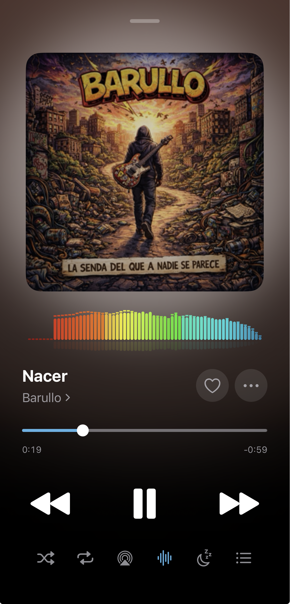
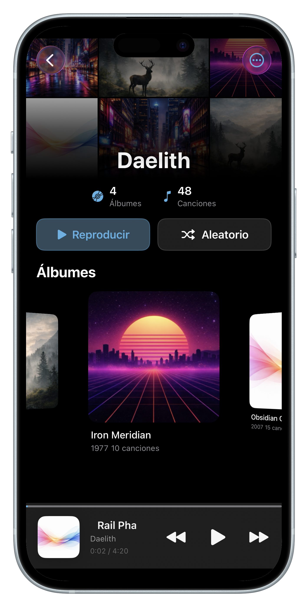
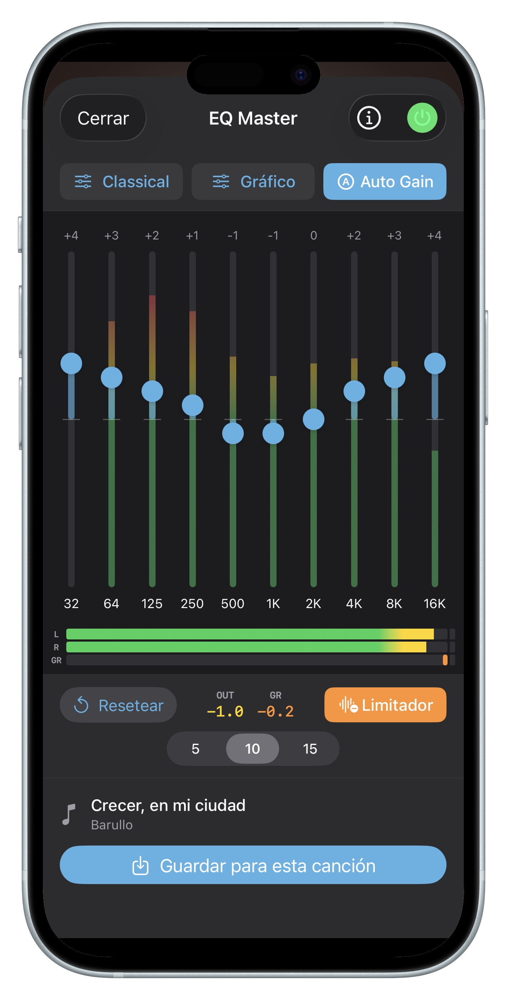
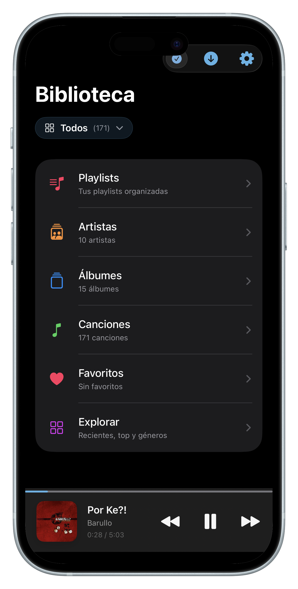
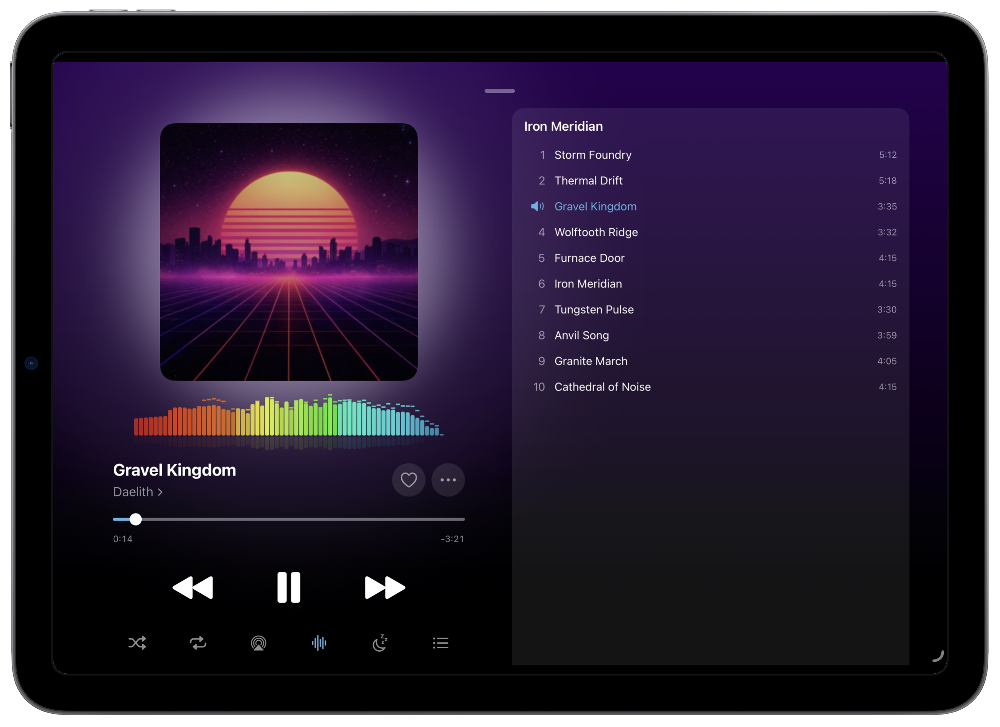
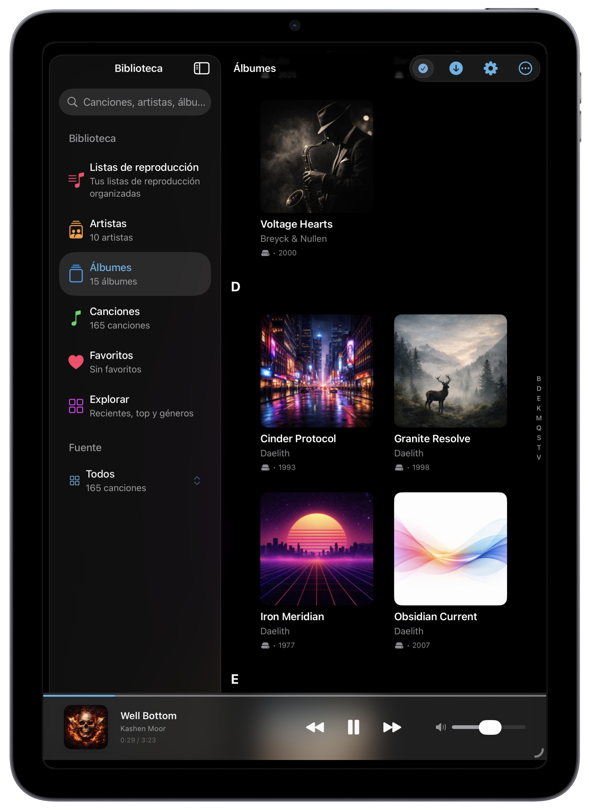
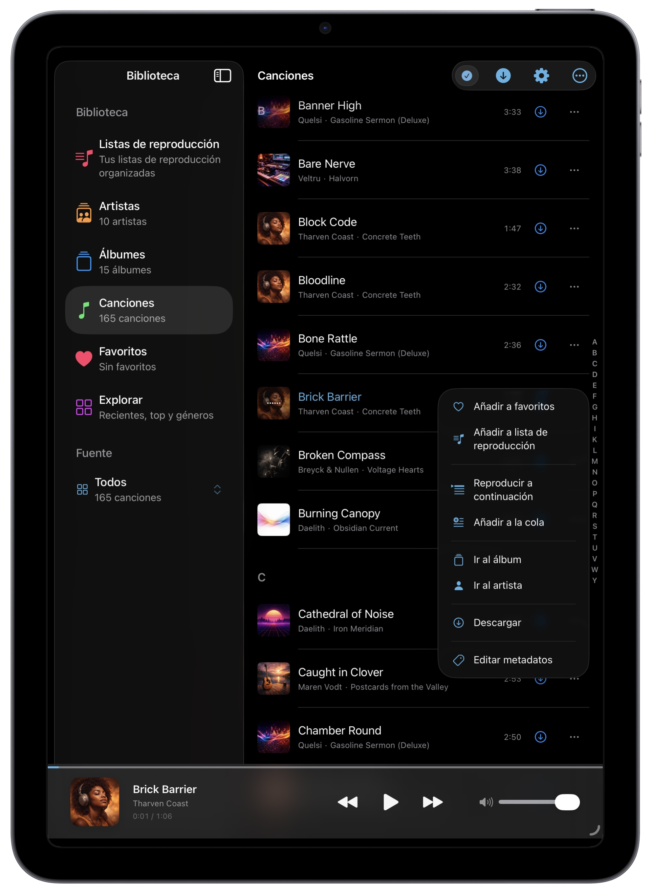
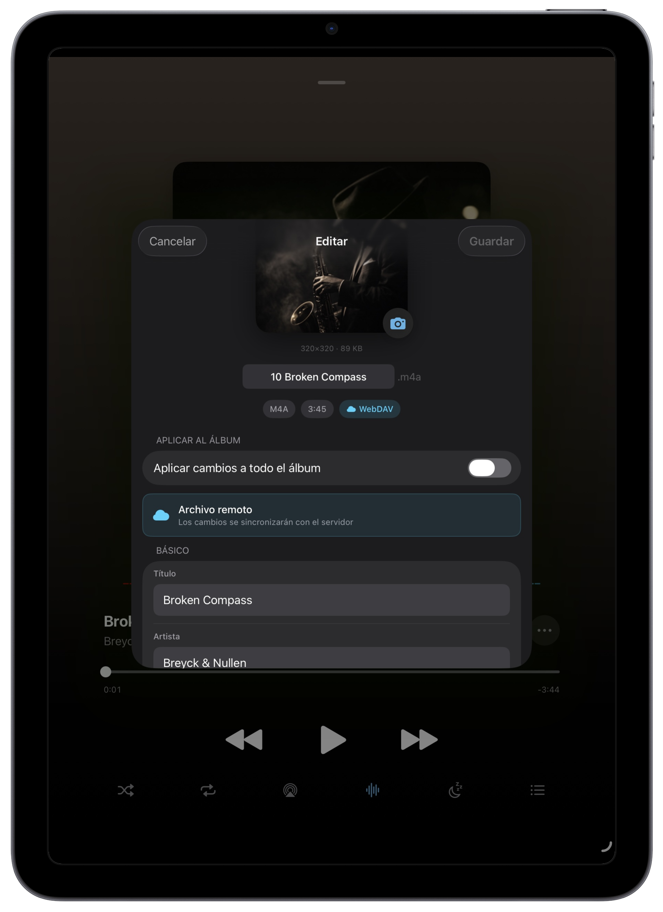
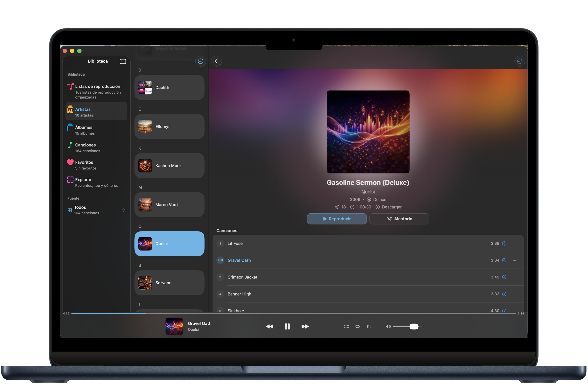
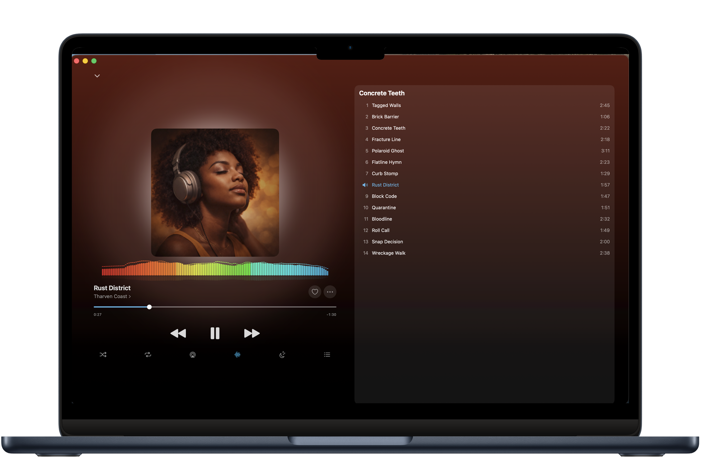
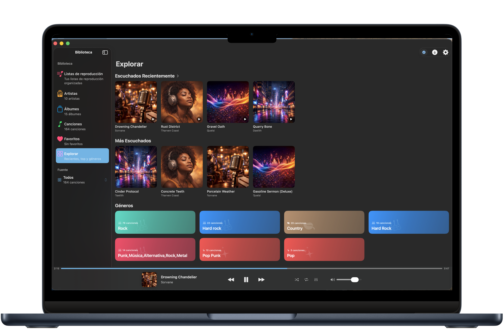
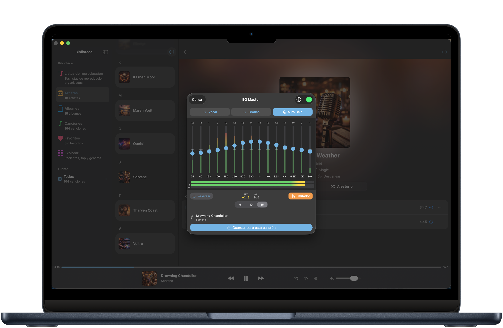
Funciones
Diseñado para audiófilos que quieren el control total de su biblioteca musical.
Conecta varios servidores NAS y WebDAV a la vez. Toda tu música unificada en una sola biblioteca.
Descarga álbumes o canciones individuales para escuchar sin conexión a internet.
Transiciones suaves entre canciones con 4 curvas matemáticas: Linear, Equal Power, S-Curve y Logarítmica.
Navega por artistas, álbumes, canciones, playlists y favoritos. Con búsqueda rápida e índice A-Z.
Edita título, artista, álbum, año y portada directamente desde la app, sin necesidad de un ordenador.
Widgets en la pantalla de inicio con tu música reciente y atajos de Siri para controlar la reproducción.
Gestiona la cola de reproducción con total control. Añade, reordena y elimina canciones sobre la marcha.
Exporta tus cuentas y configuración para restaurarlas después de reinstalar la app o en otro dispositivo.
Programa la música para que se detenga automáticamente. Perfecto para dormir.
Audio
Herramientas de audio avanzadas que normalmente solo encuentras en software profesional.
15 bandas con control preciso de frecuencias
Visualización en tiempo real del audio
Previene la distorsión en volúmenes altos
Reproduce FLAC, WAV y AIFF sin pérdida de calidad
Control de graves y agudos con curvas shelving
Transición suave al pausar y reanudar la música
Fuentes de música
Conecta tu NAS o servidor y empieza a escuchar.
Audio Station y File Station
Cualquier servidor compatible
Archivos en tu dispositivo
Formatos soportados: FLAC · WAV · AIFF · MP3 · M4A · AAC · OGG
12 idiomas: Español · English · Français · Deutsch · Italiano · Nederlands · Polski · Português · Dansk · Suomi · Norsk · Svenska
Disponible en TestFlight para iPhone, iPad y Mac.
Probar en TestFlight